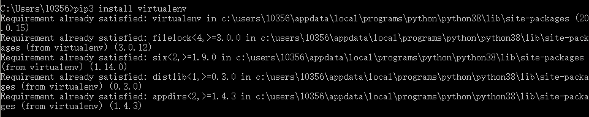
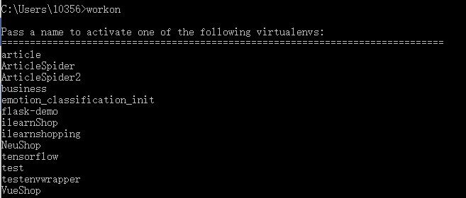
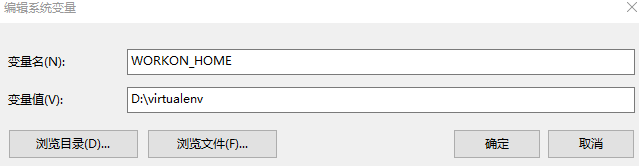

安装虚拟环境
打开cmd：
python2:
pip install virtualenv
python3:
pip3 install virtualenv

第三方镜像
下载国内镜像，快速下载安装包，避免超时
python豆瓣源，第三方镜像
https://pypi.doubanio.com/simple/
使用案例：
比如-安装selenium,django
pip install -i https://pypi.doubanio.com/simple/ selenium
pip install -i https://pypi.doubanio.com/simple/ django

解决方案：python -m pip install --upgrade pip
卸载已安装的组件：
pip uninstall django（组件名）
python3新建虚拟环境
virtualenv -p D:\python3\python.exe(python的安装路径) scrapypy3
安装在了当前目录下。
创建虚拟环境
virtualenv name(scrapytest)
开启虚拟环境
cd scrapytest/Scripts activate.bat
执行python:

退出虚拟环境
deactivate.bat
virtualenvwrapper
安装virtualenvwrapper
pip install virtualenvwrapper-win （中间没有空格virtualenvwrapper-win）
查看所有的虚拟环境
workon

基于virtualenvwrapper创建虚拟环境
mkvirtualenv py3scrapy
修改虚拟环境存放目录
添加环境变量--->WORKON_HOME,不需要添加path

进入某虚拟环境：
workon name
退出虚拟环境：
deactivate
查看依赖吧包：
pip list